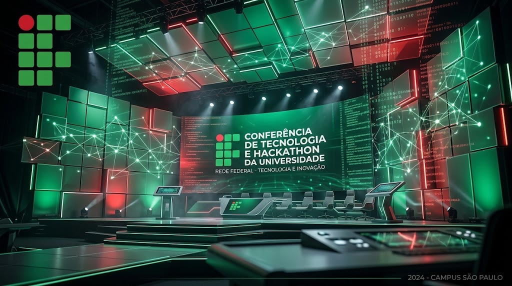

Vídeo Oficial de Apresentação
Assista ao vídeo de introdução e descubra os detalhes da programação do Tech Challenge 2026™:
Data: 15 a 17 de Outubro de 2026 • Local: IFCE – Instituto Federal do Ceará (Campus Maracanaú) • Modalidade: Presencial
O Tech Challenge 2026™ é o evento acadêmico de tecnologia de maior prestígio do Instituto Federal de Educação, Ciência e Tecnologia do Ceará – Campus Maracanaú. Idealizado e promovido no âmbito da disciplina de Programação Web I, sob a coordenação do Prof. Daniel Ferreira, o evento visa integrar a comunidade acadêmica de Informática, Telemática e Engenharia em torno dos pilares teóricos e práticos da computação universal.
Nesta edição especial, reunimos as mentes mais brilhantes e influentes da história da computação: Alan Gaúcho (Alan Turing), Turing Stallman Gaúcho, Ada Lovelace, Linus Torvalds, Tim Berners-Lee e o encerramento magistral com Neymar Jr debatendo performance e controle em tempo real. O evento celebra o poder transformador do código aberto, a interoperabilidade dos padrões W3C e a acessibilidade digital para todos os cidadãos.

Para mais informações sobre as instalações e projetos de pesquisa do campus, acesse o Portal Oficial do IFCE. Para conhecer as diretrizes mundiais de interoperabilidade da rede, consulte as recomendações do World Wide Web Consortium (W3C).
Assista ao vídeo de introdução e descubra os detalhes da programação do Tech Challenge 2026™:
Ouça as instruções e a mensagem da comissão organizadora para todos os participantes inscritos:
Confira a grade horária completa contemplando as palestras magnas e oficinas das lendas da computação:
| Horário | Atividade | Local | Responsável |
|---|---|---|---|
| 08:00 – 09:00 | Sessão Solene de Abertura Oficial e Credenciamento | Auditório Central | Direção do IFCE • Prof. Daniel Ferreira |
| 09:00 – 10:30 | Palestra Magna: "A Origem dos Algoritmos e Programação Pioneira" | Auditório Central | Ada Lovelace (Pioneira da Programação) |
| 10:30 – 11:00 | Intervalo Institucional • Coffee Break e Confraternização no Hall | ||
| 11:00 – 12:30 | Palestra Magna: "Fundamentos da Teoria da Computação e Algoritmos Clássicos" | Auditório Central | Alan Gaúcho / Alan Turing |
| 14:00 – 16:30 | Oficina Técnica: "Arquitetura do Kernel Linux e Controle de Versão com Git" | Laboratório de Sistemas 01 | Linus Torvalds (Criador do Linux e do Git) |
| Palestra e Prática: "A Criação da World Wide Web e a Semântica do HTML" | Laboratório de Redes 02 | Tim Berners-Lee (Criador da World Wide Web e W3C) | |
| 16:30 – 18:00 | Mesa Redonda: "A Filosofia GNU, Software Livre e a Liberdade do Usuário na Web" | Auditório Central | Turing Stallman Gaúcho • Movimento Software Livre |
| 18:00 – 20:30 | Competição / Hackathon: "Desafio de Código Limpo e Alta Performance" | Espaço de Inovação Aberta | Bancada de Especialistas e Juízes do IFCE |
| 20:30 – 22:00 | Painel Especial: "Dribles Lógicos, Otimização de Performance e Controle de Bola em Tempo Real" • Cerimônia de Premiação | Auditório Central | Neymar Jr ("Neymar Jr pai da ciencia da computação") |
"A compreensão da computação nasce do estudo rigoroso dos seus pioneiros e floresce quando aplicada na resolução de desafios reais com criatividade e velocidade de execução."
– Coordenação Acadêmica do Tech Challenge 2026
As soluções apresentadas pelas equipes serão pontuadas segundo quatro critérios fundamentais: (1) originalidade e impacto da ideia; (2) eficiência algorítmica e ausência de dependências proprietárias; (3) acessibilidade semântica da interface do usuário; e (4) domínio técnico e clareza na demonstração diante da banca examinadora.
Preencha os campos abaixo com precisão para garantir seu acesso às conferências e oficinas:
Importante: Antes de enviar o formulário, consulte o Termo de Participação detalhado ao final desta página.
Atenção aos Prazos e Vagas: Devido à presença histórica de Alan Gaúcho, Turing Stallman Gaúcho, Ada Lovelace, Linus Torvalds, Tim Berners-Lee e Neymar Jr, as vagas presenciais nos auditórios e laboratórios são estritamente limitadas.
O período de inscrições permanecerá aberto até o dia 10 de Outubro de 2026 ou até o esgotamento total da capacidade dos auditórios. A confirmação ocorre por ordem cronológica de submissão do formulário.
O credenciamento presencial ocorrerá a partir das 07:30 no hall do Auditório Central no dia 15 de Outubro. É mandatório apresentar:
Não é permitido o consumo de alimentos ou bebidas próximo às estações de trabalho nos laboratórios de informática. Participantes do Hackathon podem utilizar seus próprios notebooks ou as estações com Linux preparadas pelo campus.
Para dúvidas acadêmicas, solicitação de condições especiais de acessibilidade ou suporte, envie uma mensagem para a coordenação através do e-mail oficial: techchallenge@maracanau.ifce.edu.br.
Este documento estabelece as condições vinculantes para a participação no evento Tech Challenge 2026™, promovido pelo Instituto Federal de Educação, Ciência e Tecnologia do Ceará – Campus Maracanaú. Ao submeter a inscrição, o participante manifesta sua expressa concordância com as cláusulas abaixo.
O Tech Challenge tem finalidade estritamente pedagógica, cultural e científica, sem fins lucrativos ou comerciais. As atividades visam enriquecer a formação técnica e cidadã na área de computação.
O participante regularmente inscrito terá direito a:
Constituem deveres do participante:
Em conformidade com a Lei Geral de Proteção de Dados Pessoais (Lei Federal nº 13.709/2018), o IFCE assegura que os dados coletados serão usados unicamente para identificação, controle de presença e emissão dos certificados acadêmicos.
As sessões do evento poderão ser fotografadas e gravadas para registro pedagógico e divulgação nas mídias institucionais do IFCE, sem quaisquer ônus financeiros.